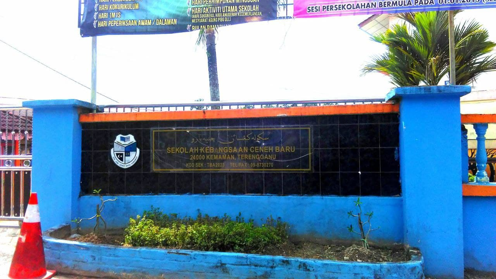
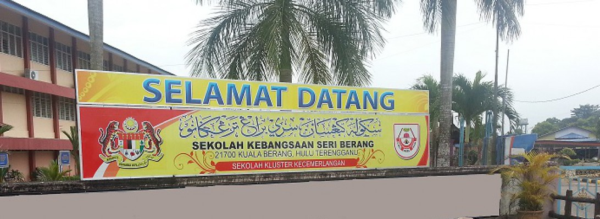

EDUCATION
"This is my journey in education. I have studied in many places. Each of these places brings back very meaningful memories for me. I will never forget it."
PRIMARY SCHOOL
SK CENEH BARU
This was my first school when I entered primary school. I studied at Sk Ceneh Baru from 2008-2010. At that time, the school was close to my house. I went to school there until 3rd year only. After that, I moved to another school.
SK SERI BERANG
This school was my second school when I was in primary school. I entered this school in 2011 to 2013. I got into this school when I was year 4. A lot of things and memories I got in this school.
Achievements:
| Year | Activities |
|---|---|
| 2013 |
|
HIGH SCHOOL

SMA Mahmudiah
This is the school I went to during my high school days. I studied at SMA Mahmudiah from 2014-2018. The school has dormitories but I choose to stay at home. There are a lot of memories and things that I got while studied here. I also participated in some activities during high school.
Achievements:
| Year | Activities |
|---|---|
| 2017 |
|
| 2018 |
|
UNIVERSITY (DIPLOMA)

UiTM Machang, Kelantan
After finishing school, I went on to pursue a diploma. I continued to study at UiTM Machang, Kelantan. The course that I took was Information Management course under Faculty of Information Management. The total of the semester are 5. I also joined some clubs/associations to be active.
Achievements:
| Year | Activities |
|---|---|
| 2019/2020 |
|
| 2020/2021 |
|